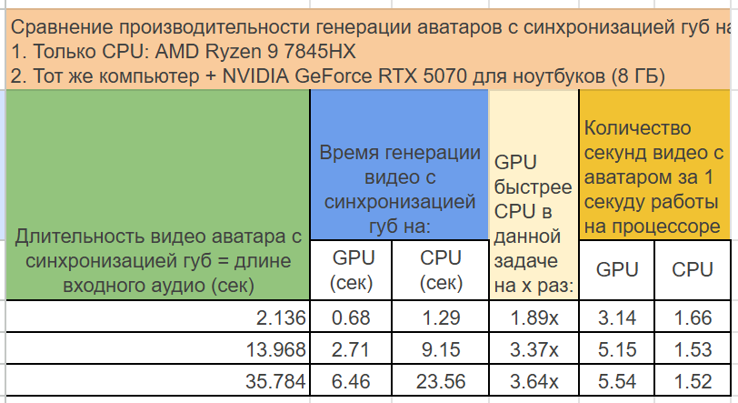

Уважаемый потенциальный инвестор,
Я рад представить вам технологию AI-аватаров, которая объединяет социальную ценность с мощным коммерческим потенциалом. Ключевое конкурентное преимущество — высокая производительность при минимальных требованиях к железу: рекордная скорость, энергоэффективность и работа локально даже на самых простых процессорах (CPU или GPU) для ноутбуков. Это дает конкурентные преимущества перед лидерами рынка.
Рыночные возможности и преимущества для инвесторов
Почему это выгодная инвестиция:
- Четкие конкурентные преимущества перед лидерами рынка
- Проверенная технология, уже помогающая людям с ограниченными возможностями
- Множественные области применения = источники дохода (B2C и B2B)
- Масштабируемое решение с низкими требованиями к инфраструктуре
- Растущий рынок решений AI
Ключевые высокопотенциальные рынки:
- Робототехника – интерфейсы для гуманоидных роботов
- Аватар-ассистенты (для компаний любого размера) работают локально на серверах конкретной компании, гарантируя приватность данных и отсутствие утечек
- Медицинская реабилитация – вспомогательные технологии для людей с ограниченными возможностями
- Цифровые медиа – создание контента для соцсетей и маркетинга
Основные функции решения и преимущества перед лидерами рынка
Основная функция:
Создание аватаров с синхронизацией губ и полным клонированием голоса. Аватар можно создать практически из любого видео или фотографии. После этого он сможет озвучивать любой текст или аудио с идеальной синхронизацией движений губ на любом языке.
Ключевые отличия от лидеров рынка:
- Высокая скорость: видео аватара с синхронизацией губ воспроизводится практически мгновенно даже на мобильном CPU (!!БЕЗ использования gpu!!).

- Энергоэффективность: технология оптимизирована для работы на недорогом оборудовании, что значительно сокращает затраты на инфраструктуру и потребление энергии.
- Локальное использование: решение работает без облачных сервисов, обеспечивая полную конфиденциальность данных и исключая риск утечек. Это особенно важно для корпоративного сектора.
- Дополнительные видеоэффекты: в режиме стриминга можно добавлять фоны, фигуры, надписи, рисование поверх видео и другие элементы.
- Неограниченная длительность видео: даже если исходный образец аватара длится всего 3 секунды, система автоматически достраивает видео до нужной продолжительности.
- Реалистичное клонирование голоса: технология создаёт полноценный голосовой клон (не просто похожий, а неотличимый от оригинала). Качество сопоставимо с коммерческими аналогами (например, Microsoft), но при этом модель компактнее, быстрее и требует меньше ресурсов, что снижает стоимость эксплуатации.
- Функция «Поговори со мной»: уникальная возможность пообщаться с разными персонажами — от пиратов до литературных героев вроде Анны Карениной или Дон Кихота — в их характерной манере.
Примеры использования продукта
0. Мгновенное создание аватара с синхронизацией губ для видео любой длительности.
Примечание: все примеры ниже работают в реальном времени на мини пс с мобильным CPU AMD Ryzen 9 7845HX !!БЕЗ использования gpu!!.
1. Прямая трансляция с эффектами
2. Живое общение с аватарами
3. Телеграм-бот для людей, потерявших голос или внешность
- Помогает общаться с помощью аватаров, синтетических голосов или полных голосовых клонов
- Включает функцию "Поговори со мной"
Следующие шаги
Продукт уже работает и активно развивается. Если вас заинтересовало решение, я готов:
- Провести подробную демонстрацию.
- Ответить на все вопросы.
Буду рад сотрудничеству!